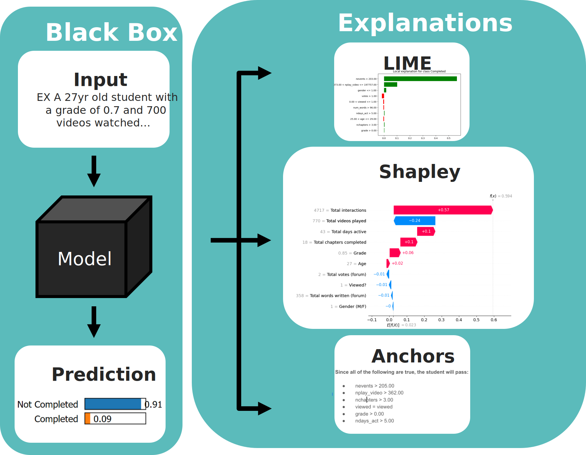

Conway's Game of Life | levshuster, samgjl
- Conway's game embodies my love for algorithms. With such a simple ruleset, one can generate entire worlds!
- This was actually my first project in pure Javascript.
- Nowadays, I use the Game of Life to learn new languages.
- Tools: HTML/CSS, JS, Github Pages
- Learning goals: HTML/CSS, JavaScript, Web hosting
XView2 Challenge | lily-haas, roslanskyc, samgjl
- Adapted biomedical imaging model U-Net to find and report damage in natural disasters
- Engaged with the ethics of military-funded machine learning
- Architecture design, results, and ethics may be found here
- Tools: Python: Tensorflow/Keras, Numpy, Pandas
- Learning goals: advanced machine learning architectures, machine vision, ethics in ML
Advent of Code (2023) | samgjl
- Undertook a 25-puzzle progressive coding challenge to practice deriving implementing algorithms across a variety of languages
- 16/25 days completed due to college time constraints. Project will be resumed at a later date
- Tools: Python, Java, C++, C#, Golang
- Learning goals:Language acquisition, adaptive thinking, algorithm optimization

XAI: Breaking Down the Black Box | levshuster, samgjl, et al.
- Co-lead a team of undergraduate researchers in an exploration of explainable machine learning techniques
- Administered a user study on public understanding of- and trust in explainable machine learning
- Piloted intradepartmental collaboration with Adversarial AI research
- Tools: Python: PyTorch/Tensorflow/FastAPI, Docker, JavaScript
- Learning goals: Machine learning interpretability, team leadership, user study design, collaborative research
- See an abridged summary of my work here